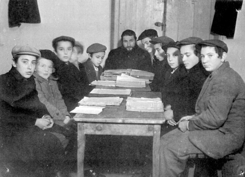

Yiddish And/or Yiddishkait
The author’s response to questions and comments he received to his article on the Rebbe’s letters and yechidusin regarding which language should be used in yeshivos.

In issue #826 I presented a compilation of letters and yechidusin of the Rebbe regarding which language should be used in Yeshivos. It appears clear that the Rebbe’s position is that the language should be the one that is most natural and familiar to the students (and not necessarily Yiddish).
I have received several questions and comments in response to that article. I therefore desire to add some clarification בע”ה.
Question: For hundreds of years, Yiddish has been the language used for learning Torah. Also, the Rebbe says that the Yiddishe Galus-Shprach is so important! So how can we be so confident that this change will be beneficial? Can you imagine how the cheider and yeshiva students will turn out? What sort of atmosphere will the Yeshiva have?
Besides, the students will not be able to understand the Rebbe’s Sichos (etc.) in Yiddish!
And although we may still teach them Yiddish as a subject, it’s just not the same!
Answer: I, too, am torn on this matter.
On the one hand, I personally picked up Yiddish from being taught Chumash etc. in Yeshiva in Yiddish! I have also witnessed throughout my 30-plus years of teaching English-speaking children in Yiddish that they too eventually picked up the Yiddish.
However, on the other hand, I must confess that I barely understood the Chumash while in cheider, and naturally, therefore lacked the Geshmak in learning it.
I certainly believe that had I learned Chumash in my native language, I would have understood much more and with more appreciation of Hashem’s Torah.
Thus, let me ask you: what is the goal of a Yeshiva? Is it to teach in Yiddish, thereby ensuring that the students will pick up the Yiddish language, albeit at the expense of understanding and appreciating Hashem’s Torah? Or is it to teach them Torah in their native language so that they will actually learn Torah and appreciate it?
As the saying goes, don’t try to act more royal than the King! If this is what the Rebbe guides us to do, how dare we object!
Question: Isn’t it the yeshiva’s responsibility to provide the child with such a vital tool as Yiddish? How can we drop it?
Answer: Let me answer with a parable.
A teacher once planned a class trip to the park. Since it was expected to be a cold day, he sent a note home to the parents, urging them to make sure that the kids arrive the following day dressed warmly.
The next day, two kids came to school without proper dress. So the Rebbi was forced to reluctantly leave them behind. The Rebbi made sure that they would have some kind of other activity instead.
That evening, the teacher received a call from one of the two parents, complaining why her son was left behind.
The teacher explained to her, “I had no other choice than to leave him behind, because he came to school without a coat. Your son’s health is obviously in our mutual interest.”
The lesson is as follows: The Rebbi would gladly teach in Yiddish had the children in his class been “properly dressed” – that is, properly trained from their home to fluently speak and understand Yiddish! But now that the children do not know Yiddish from their home, what is the Rebbi to do – take them to the park and have them freeze? In other words, is he to teach them in a foreign language and turn them off, Chas V’Shalom?
Had the children been trained to speak Yiddish fluently at home, or at least in pre-school by means of a “Yiddish-immersion program,” then this whole question would be moot, for these children would be properly prepared to learn in Yiddish.
And as the Rebbe writes: “It bears looking into whether acquiring these advantages (of speaking Yiddish) is the task and responsibility of the school or the obligation of the parents and the atmosphere in the home.”
Bottom line: The Yeshiva has to focus on the best way to teach the child Torah, not a language!
Question: Yet, if it is as you say, that there is absolutely no room for teaching English-speaking children in Yiddish, then we are consequently faced with the following dilemma. At some early stage of their Torah-education development, the children will need to attain the ability to express themselves in writing, as well as answer questions on tests, homework etc.
If they learn in English, wouldn’t they need to acquire some basic English reading/writing skills? In other words, since they speak, learn and taitch in English, wouldn’t we be forced to teach these children basic English language skills? Indeed, the Rebbe says that we should not teach our children Limudei-Chol, yet there may be room for speculation whether or not this applies in our situation, where nearly all of our children speak exclusively English.
In other words, does the Rebbe’s prohibition against young children learning Limudei Chol extend to reading and writing as well?
Also, consider the chinuch circumstances in 1954, when the Rebbe spoke about not teaching secular subjects to children at least until the age of 9-12 years old. There were hardly any kosher English books to read. So, even if the prohibition extended as far as teaching basic ABC, reading etc., there was a definite danger of exposure to goyishe literature etc.
On the other hand, today, there are ב»ה many thousands of Torah-based books in English, which have brought נגלה and חסידות down to an unprecedented level of understanding to children of all ages.
So, perhaps it is OK to teach the children the very basics in reading and writing English.
Answer: I cannot answer such a question. In fact, I have consulted dozens of Chassidishe Rabbanim and mechanchim, who have all said the same thing: “What you’re saying makes sense, but to make such a drastic move, we need a unanimous decision from Rabbanim and Mechanchim.”
Question: Klotz-Kasha!
The entire argument about whether a teacher of English-speaking children should Taitch Chumash (Gemara, etc.) into Yiddish or not (apparently) makes no sense!
First of all, why have Yidden used the Aramaic translation of the Torah named Targum Unkelus?
The reason is because there were many Yidden whose native language was Aramaic, and they did not understand the Holy Language of the Torah – Lashon HaKodesh – so instead of waiting for them to learn Lashon HaKodesh and only then teach them the Torah, the Targum-Unkelus was made available to them.
Many years have passed, and people once again needed a new translation of the Torah, in their native language, namely Yiddish. That’s when the Yiddish-taitch was introduced.
Did anyone get up and say, “Chas V’Shalom to change our tradition of translating Chumash into Aramaic. We must keep on using our traditional Aramaic translation of Unkelus! Instead of saying ‘VaYomer = Un Er Hut Gezugt,’ we must say it in the Aramaic vernacular ‘VaYomer = Va’amar!’”
The same thing is with the Gemara; the reason why yeshivos began translating Gemara to Yiddish was only because Yiddish was their native tongue. We never heard of a yeshiva saying, “How dare we change our Mesora! We must continue to teach the Gemara in Aramaic!”
Absolutely not! No one made this argument. Why not? Because, as the Rebbe says, a Yeshiva has one and only one focus and duty, that is, to teach the children Torah!
So, when the native language was Lashon HaKodesh, there was no need to Taitch. But when the need to translate emerged, then we translated the Torah into Aramaic, and eventually, into Yiddish!
In fact, the precise Taitch of the word “Taitch” is “Meaning,” not “Yiddish language!”
Thus, to insist on Taitching the words of Chumash to English-speaking students into Yiddish is the exact opposite of what “Taitch” is meant for!
It is as ludicrous and risible as insisting on translating the Chumash into Targum Unkelus!
Yes, Yiddish is special. But, as the Rebbe says, it must be taught as a separate subject, not at the expense of learning Torah!
Let me end with a parable:
Yossi is a yeshiva boy who lived on 780 Grape Street.
At the beginning of the school year, Dudy, the Yeshiva bus driver, was instructed to make a trip every day to 780 Grape Street to pick Yossi up and bring him to the Yeshiva, which he faithfully did for the following six months.
Then, one day, Dudy was told that the boy moved to 163 Main Street and needed to be picked up from there instead from now on.
But Dudy the bus driver refused to do so and simply continued going to Yossi’s old address on Grape Street!
When asked about this, Dudy answered, “I am following the instructions given to me at the beginning of the year, to pick him up from Grape Street. It’s not my fault that now Yossi is not there!”
The lesson is obvious: A thousand years ago, when Yiddish-Taitch was introduced, it was only because that was the spoken language and the only way that the masses of Yidden were able to learn and understand the Torah was through Yiddish.
But, in 2012, when the Yidden moved to another language, don’t we have to pick them up from where they are now?
It is true, that over the years Yiddish has become a holy language because the Yidden used it for learning Torah. But, isn’t Aramaic of the Gemara also a holy language, and yet, when the Yidden moved to Yiddish, their teachers followed them and began teaching them Gemara in Yiddish!
So now, that the Talmidim “moved” over to English, should we not follow them?
Despite all the above arguments, the best solution is simply for parents to put in the effort and bring up their children with Yiddish.
The fact is, that countless English speaking parents, myself included, have stubbornly insisted on speaking in Yiddish at home with their children, and the children grew up not only understanding Yiddish, but also speaking a fluent Yiddish.
So all those advocating a change in the yeshiva system to teach in English, would be better off launching a campaign addressed to the parents to raise their children speaking only Yiddish!
Then, we will be able to continue teaching and learning Torah in Yiddish, as in the past!
Bottom line: We certainly want to teach our children according to the Rebbe’s Horaos.
Thus, we have ONLY two options: 1. English speaking parents learn the Yiddish language and use that as the “home-language,” so that the child acquires it as his mother-tongue, and then he can learn Torah in yeshiva in Yiddish. Alternatively, the more practical, tested and proven way is to make pre-school “total immersion” in Yiddish; or 2. see the above article!
To access Rabbi Levi Goldstein’s previous articles, please visit: www.ChinuchTime.com.
Rabbi Levi Goldstein. "Yiddish And/or Yiddishkait." Beis Moshiach, no. 834 (May 16, 2012).